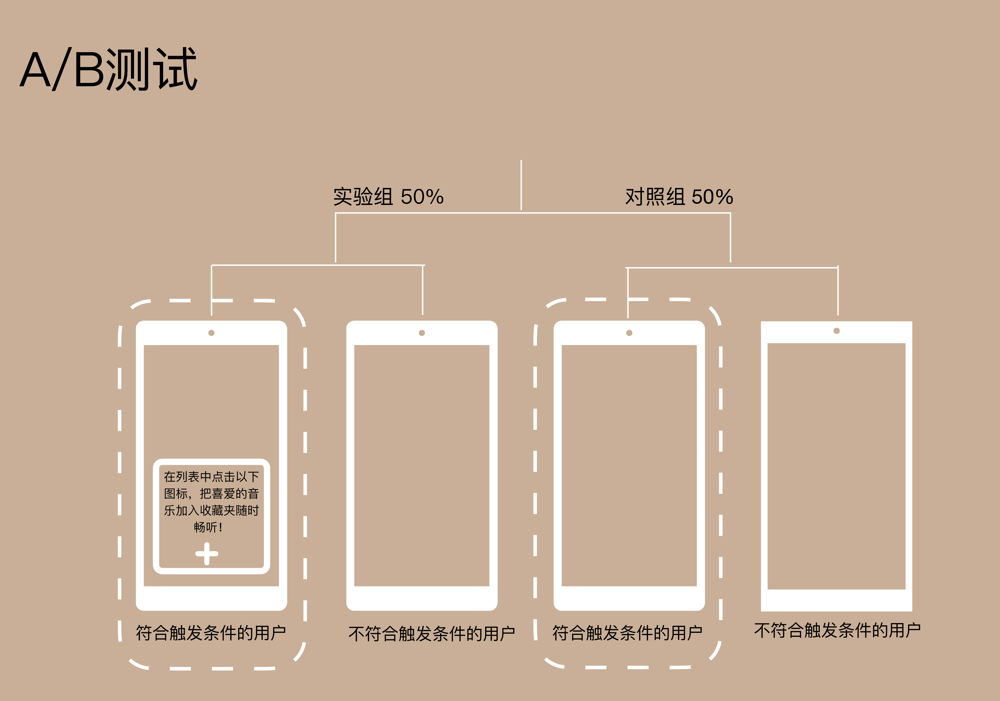
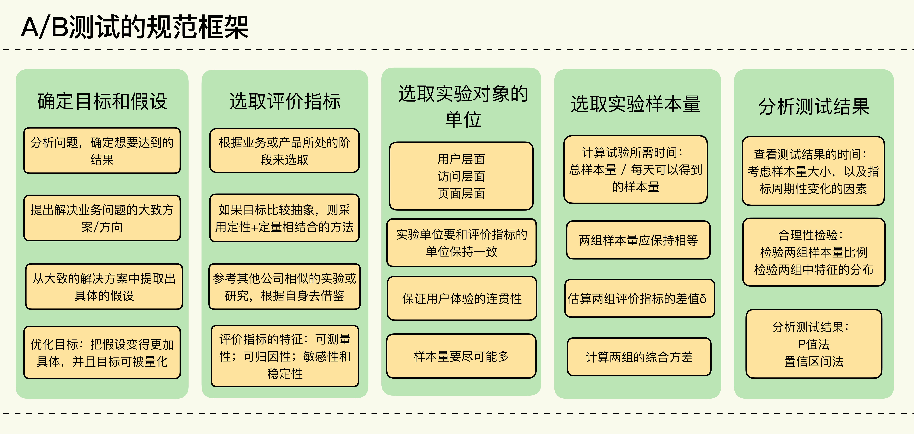

- 00 开篇词 用好A_B测试，你得这么学.md.html
- 01 统计基础（上）：系统掌握指标的统计属性.md.html
- 02 统计基础（下）：深入理解A_B测试中的假设检验.md.html
- 04 确定指标：指标这么多，到底如何来选择？.md.html
- 05 选取实验单位：什么样的实验单位是合适的？.md.html
- 06 选择实验样本量：样本量越多越好吗？.md.html
- 07 分析测试结果：你得到的测试结果真的靠谱吗？.md.html
- 08 案例串讲：从0开始，搭建一个规范的A_B测试框架.md.html
- 09 测试结果不显著，要怎么改善？.md.html
- 10 常见误区及解决方法（上）：多重检验问题和学习效应.md.html
- 11 常见误区及解决方法（下）：辛普森悖论和实验组_对照组的独立性.md.html
- 12 什么情况下不适合做A_B测试？.md.html
- 13 融会贯通：A_B测试面试必知必会（上）.md.html
- 14 举一反三：A_B测试面试必知必会（下）.md.html
- 15 用R_Shiny，教你制作一个样本量计算器.md.html
- 加餐 试验意识改变决策模式，推动业务增长.md.html
- 导读 科学、规范的A_B测试流程，是什么样的？.md.html
- 结束语 实践是检验真理的唯一标准.md.html
- 捐赠
08 案例串讲：从0开始，搭建一个规范的A_B测试框架
你好，我是博伟。
经过前面几节课的学习，相信你不仅掌握了做A/B测试的统计原理，还知道了一个规范的A/B测试的流程是什么样的，以及关键步骤中有哪些需要注意的地方。
今天这节课的内容，整体来说不会太难，主要是用一个音乐App提升留存率的案例，来串讲一下我们学过的统计知识，以及做A/B测试的几个核心步骤。
在学习这节课的过程中，一方面，如果你还有一些没有完全搞懂的内容，可以再针对性地复习下，查漏补缺；另一方面，之前几节课的内容容量都比较大，今天的案例串讲相当于帮助你理清思路，清空大脑，然后再有效地去吸收进阶篇的知识。
好了，那我就通过下面音乐App这个案例，来带你走一遍流程。
从业务问题出发，确定A/B测试的目标和假设
咱们今天案例里的产品是一款音乐App，用户只要每月付费就可以免广告畅听千万首音乐。当然，除了最基本的播放音乐功能，产品经理还给这款App设计了很多便利的功能，比如用户可以把喜欢的音乐加入收藏夹，可以创建不同的歌单，还可以离线下载以便随时随地畅听自己喜欢的音乐，等等。
数据科学家通过数据分析也发现，使用这些便利功能的用户往往有着高于平均水平的续订率，说明这些便利功能确实有助于提升用户留存。但是也有一个问题一直困扰着团队：这些功能虽然方便实用，有助于优化用户的听歌体验，但是使用率却一直不高。使用率不高，从长期来看，势必会影响用户留存。
团队通过用户调研才发现其中的原因。
由于App的页面设计崇尚简洁，这些功能一般就存放在每首歌曲的功能列表中，而用户往往需要点击两次才能使用：第一次先点击功能列表，第二次再点击具体的产品功能。一方面，很多用户，尤其是新用户，并没有发现这些功能。另一方面，点击两次才能使用，用户体验并不好，慢慢地也就退订了。
那么，我们现在的目标就非常明确了：增加用户对产品功能的使用率。
如何增加这个使用率呢？你可能会说，把每个功能都直接显示出来，让用户一目了然，不就可以提高它们的使用率了嘛！产品经理刚开始就想到了这一点，但是后来发现功能太多，全部直接显示出来，会让歌曲界面看起来非常杂乱，会让用户体验更糟糕。
既然产品交互界面的改动被否定了，那么我们可不可以主动告知用户这些功能怎么使用呢？
比如说，在新用户刚注册登录后就告知他们每个功能的用法。不过这个想法很快也被产品经理否定了，毕竟新用户刚登录时并不会用到所有功能。这很好理解，因为没有需求嘛，新用户在看到这些功能时肯定也没有什么反应，所以新用户在第一次登录时一般都会跳过产品功能介绍。
之前的A/B测试也验证了这一点。只有在用户有使用这个功能的需求时，再告知他们，才最有效果。
于是团队的假设就是：在用户有需求时，通过弹窗的形式告知用户相关使用功能，以此提升相关功能的使用率。这样的话，既能避免对每一个新用户的打扰，又能满足有需求的用户，两全其美。
确定A/B测试的评价指标
确定了目标和假设之后，就可以开始定义评价指标了。
团队准备先拿“把喜欢的音乐加入收藏夹”这个功能来做一个A/B测试，验证以上的假设是否成立。
因为要在用户有需求的时候再告知用户，所以我们就需要一个条件来触发这个告知。那么，我们的首要任务就是确定触发条件：只有当用户从来没有用过这个功能（如果用户知道这个功能的话我们就没有必要告知了），并且播放同一首歌曲达到x次时（以此来判断用户对某首歌曲的喜爱程度），我们才会给用户发送弹窗通知。
经过数据科学家的数据分析，最终确定了x的最优值为4，所以该功能的弹窗的最终触发条件为：
- 该用户从来没用过“把喜欢的音乐加入收藏夹”这个功能。
- 该用户已经对某首歌听了4次，当播放第5次时触发弹窗。
需要说明的是，因为弹窗是为了要告知用户，不需要重复提醒，所以每个符合触发条件的用户也只能收到一次，不能多次触发。
在这个A/B测试中把用户随机分为实验组和对照组，每组50%。
- 在实验组中，如果用户满足了触发条件，系统就会发送弹窗提醒（如上图）。
- 在对照组中，用户不会收到弹窗提醒，不管是否符合触发条件。
确定了目标和假设，现在我们来具体定义下评价指标：
“把喜欢的音乐加入收藏夹”功能的使用率 = 使用了“把喜欢的音乐加入收藏夹”的用户总数 / 实验中的用户总数。
很明显，这是一个概率类的指标，也就是说在实验中的这些用户，使用了“把喜欢的音乐加入收藏夹”这个功能的概率有多少。不过，为了使我们的评价指标更加具体，也方便之后的计算，所以这里我们要搞清楚两个问题。
第一个问题，如何定义“实验中的用户”？
鉴于用户只有满足了条件才会触发弹窗，并不是所有在实验中的人都会受到影响，所以测试时不能用所有被分配在实验中的用户，因为这样就会引入没有受到影响的用户（那些被分配在实验中但是却没有满足触发条件的用户），从而降低测试的准确性。所以一定要注意，这里的“实验中的用户”应该是符合触发条件的用户（下图中虚线部分）。
在实验组中就是触发弹窗的用户，在对照组中则为符合触发条件的用户（因为对照组中的用户不管符合不符合触发条件都不会触发弹窗）。- - 第二个问题，如何确定用户从触发弹窗开始到最终使用功能的时间窗口期呢？
因为本次A/B测试是要检测弹窗是否会对相关功能的使用率有所提升，而且每个用户触发弹窗的时间不同，所以需要事先规定一个统一的时间窗口期来衡量，比如触发后x天之内的使用率，这样统一化是为了使指标更加清晰准确。
因为弹窗告知在这里具有及时性，及时性也就是说在用户有需求时，所以如果用户是受到弹窗的影响才使用相关功能时，肯定会在看到弹窗不久后就使用了。我们这里就把x设为1，即触发后1天内的使用率。
搞清楚了这两个问题，我们就可以把评价指标最终定义为：- “把喜欢的音乐加入收藏夹”功能的使用率 = 在符合触发条件后1天之内使用了“把喜欢的音乐加入收藏夹”的用户总数 / 实验中的符合触发条件的用户总数
光确定评价指标的具体定义还不够，为了更了解咱们的评价指标，得出准确的实验结果，我们还要从统计的角度来看下这个指标的波动性如何。
通过对历史数据的回溯性分析，得到了用户在符合触发条件后一天之内使用相关功能的平均概率为2.0%，通过统计公式最后求得该指标95%的置信区间为[1.82%，2.18%]。这就说明如果测试结束后两组评价指标的值均落入这个波动范围内，则说明两组无显著不同，属于正常波动范围。
选取实验对象的单位
确定了A/B测试的评价指标后，接下来我们要确定下实验对象的单位了。
因为本次实验的弹窗是用户可见的变化，而且评价指标是以用户为单位，所以我们选择用户作为最小实验对象单位，具体来说，可以选用用户ID，因为这些用户必须登录后才能享受音乐服务。
计算所需的样本大小和实验所需时间
我们继续往下走，就该计算实验所需的样本量了。这里，我们需要先确定4个统计量：
- 显著水平（Significance Level）α。
- Power （1 – β）。
- 实验组和对照组的综合方差 \(\\sigma\_{\\text {pooled}}^{2}\)。
- 实验组和对照组评价指标的差值δ。
一般A/B测试中显著水平默认为5%，Power默认为80%， 我们的案例也遵循这样的原则。至于两组评价指标之间的差值，根据我们之前算出的波动性，两者的差值要在0.18%以上，才算是统计显著的变化，那么我们就取0.2%。至于综合方差，因为是概率类的指标，我们就可以用统计公式直接算出。
确定了这些统计量后，我们算出实验组和对照组各需要至少8.07万个符合触发条件的用户，一共需要16.14万用户。而数据分析显示每天符合触发条件的新用户大约为1.7万人，所以本次实验大约需要10天时间完成。
那么当我们完成了对整个A/B测试的设计工作后，现在就让测试跑起来，收集数据，等到样本量达到预期时就开始分析测试结果。
分析测试结果
经过了一周多的等待，我们的样本量终于达标，可以来分析最终的结果啦。不过在分析结果前，我们还要确保A/B测试在具体实施过程中符合我们最初的设计，保证测试的质量品质，这时候就要做合理性检验。
我们用最常见的护栏指标来做检验。
- 实验/对照组样本大小的比例是否为50%/50%。
- 实验/对照组中特征的分布是否相似。
经过分析发现，本次A/B测试完全通过了这两项护栏指标的合理性检验，说明试验实施的正如预期。
那么，现在我们就开始正式分析实验结果了。
- 实验组：样本量为80723，符合触发条件一天之内使用功能的用户为3124，使用率为3.87%。
- 对照组：样本量为80689，符合触发条件一天之内使用功能的用户为1598，使用率为1.98%。-

根据结果我们得到的P值接近于0而且远远小于5%，同时我们计算出两组评价指标差值的95%的置信区间为[1.72%，2.05%]，不包括0，说明这两组的使用率显著不同，事实上实验组的使用率几乎等于对照组的两倍，证明了在用户需要时的弹窗提醒确实有效果！
得到这个振奋人心的结果后，团队决定把“把喜欢的音乐加入收藏夹”功能的弹窗提醒推广到所有符合触发条件的用户，同时也计划对其他功能的弹窗做类似的A/B测试，来验证它们的效果。如果一切进行顺利的话，就将这些弹窗全部推广，长期来看肯定会增加用户的留存率！
小结
通过这个案例串讲，你肯定对做A/B测试的关键步骤有了更具体、更深层次的认识了。

那么基础篇的内容到这里也就结束了。接下来我们就会进入到进阶篇的学习。
在进阶篇，我会给你讲解更多偏经验和方法论的知识。针对做A/B测试时经常出现的一些问题，我会给你讲解它们的成因，给出解决办法。针对面试中常出现的一些考点，我会结合我做面试官的经验，来给你一些解题思路。
最后我还想强调一下，学习这件事本来就是反复和持续的。进阶篇的内容会和基础篇有不少联系。所以在学习进阶篇的课程时，我也希望你能够不断温习、思考之前学过的知识。待课程结束，再回头看基础篇这些内容，相信你会有一种“蓦然回首，原来A/B测试如此简单”的畅快感和收获感。
思考题
回忆你之前做过或者经历过的A/B测试，它们是否有这些基本的流程步骤？如果缺少的话，是缺少哪些步骤，为什么？如果还有其他步骤，也和我分享一下吧。
如果你学完今天的案例串讲，对A/B测试的流程、步骤有了更清晰的认识，欢迎你点击“请朋友读”，把今天的内容分享给你的同事、好友，大家一起学习、成长。好，感谢你的收听，我们进阶篇的课程再见。
© 2019 - 2023 Liangliang Lee. Powered by gin and hexo-theme-book.